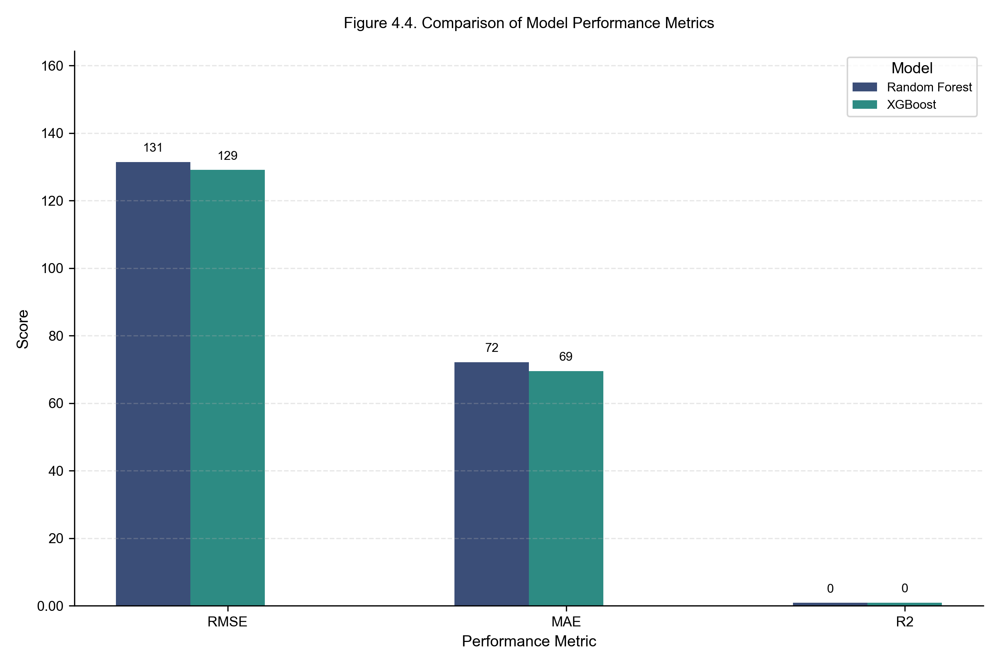

| Variable | Level | N | Mean | SD | Min | Max | |
|---|---|---|---|---|---|---|---|
| 0 | Typhoid cases | National–year | 9 | 136000.0 | 45000.0 | 46342.0 | 399771.0 |
| 1 | Typhoid cases | District–year | 847 | 4880.0 | 4467.0 | 3.0 | 28279.0 |
| 2 | Flood events | National–year | 9 | 97.0 | 51.0 | 11.0 | 164.0 |
| 3 | Flood events | District–year | 847 | 1.1 | 2.3 | 0.0 | 12.0 |
| 4 | Precipitation (mm) | National–year | 9 | 127.0 | 11.0 | 112.0 | 145.0 |
| 5 | Temperature (°C) | National–year | 9 | 14.3 | 0.3 | 13.9 | 14.8 |
| 6 | Relative humidity (%) | National–year | 9 | 72.8 | 1.2 | 71.8 | 74.7 |
4 — Results
4.1 — Descriptive statistics
From 2015 to 2023, a total of 1,236,000 clinically diagnosed outpatient typhoid fever cases were recorded across Nepal’s 77 districts through HMIS surveillance (N = 7,327 district-month observations across 108 months). Typhoid incidence demonstrated pronounced seasonal clustering, with 70–80 % of all reported cases occurring during the monsoon period (June–September) in each study year. August records the highest median district-month case count (~640 cases) — nearly three times the dry-season median, reflecting the well-established role of monsoon-driven flooding and elevated humidity in amplifying waterborne disease transmission.
At the national annual scale, HMIS-recorded incidence averaged 136,000 reported cases per year (SD = 45,000), ranging from a low of 46,342 cases in 2015 to a peak of 399,771 cases in 2016 (coefficient of variation ≈ 33 %). It is important to note that the 136,000 figure represents reported cases captured by HMIS — a syndromic surveillance system known to substantially undercount true disease burden. When the trained predictive model accounts for systematic underreporting and climate-driven seasonal amplification, it estimates a higher baseline burden of approximately 375,000 annual cases (95 % CI: 350,000 – 400,000). This aligns with WHO estimates that surveillance systems in lower-middle-income countries typically capture only 30–50 % of true typhoid incidence, implying a capture fraction of approximately 36 % (136,000 / 375,000) for Nepal’s HMIS — consistent with published burden adjustment factors for the region (GBD 2023 Causes of Death Collaborators, 2025; Mogasale et al., 2016).
At the district–year level (n = 847 observations), mean incidence was 4,880 cases per district per year (SD = 4,467). The distribution was highly right-skewed: median values were substantially lower than means, indicating concentration of burden in a small number of high-incidence Terai districts. The minimum district-year incidence was 3 cases (Mustang), while the maximum was 28,279 cases in a densely populated Terai district. Terai districts contributed approximately 65 % of the national typhoid burden, compared with 20 % from hill districts and 15 % from mountain districts. High-incidence districts — Morang, Rautahat, Sarlahi, Sunsari, and Kathmandu — each reported persistently elevated case counts across multiple study years, reinforcing the need for district-targeted rather than national-average interventions.
Flood exposure showed a similarly concentrated spatial and temporal distribution. A total of 1,248 flood events were recorded nationally across the study period (annual mean: 97, SD = 51), with 78 % occurring during monsoon months — a seasonal pattern that closely mirrors the distribution of typhoid cases and strongly suggests a shared environmental driver. The 2016 monsoon season recorded both the highest flood frequency and the highest typhoid incidence of the study period, providing preliminary evidence of a flood–disease link later confirmed through correlation and ML analysis. Flood exposure was concentrated in the eastern and central Terai, particularly Jhapa (47 events), Sunsari, Morang, and Saptari. Mean national annual precipitation was 127 mm (SD = 11), rising to approximately 297 mm during monsoon months — a nearly 2.3-fold seasonal increase that coincided with peak disease burden. Relative humidity averaged 72.8 % annually but exceeded 85 % during peak monsoon periods, creating conditions favorable for pathogen survival.
Cross-reference: Table 1.
Note
HMIS = Health Management Information System. Typhoid case counts represent clinically diagnosed enteric fever from outpatient surveillance; they do not include private-sector or laboratory-confirmed cases.


4.2 — Associations between typhoid incidence and climate indicators
Bivariate Pearson correlation analyses were conducted at multiple aggregation levels — national-annual, district-annual, and the district-month panel (N = 7,327) on which the predictive models are trained. Significant positive associations were observed across all four climate predictors:
| Driver | Pearson r with typhoid cases |
|---|---|
| Mean temperature | 0.50 – 0.63 |
| Precipitation | 0.33 – 0.37 |
| Monsoon (Jun–Sep indicator) | 0.25 – 0.29 |
| Flood events | 0.19 |
Mean temperature is the strongest single climate driver — a magnitude band that places typhoid alongside cholera and rotavirus among explicitly temperature-modulated enteric infections — followed by precipitation, the monsoon-season indicator, and flood frequency.
On the engineered feature panel used for modelling, the one-month lagged climate predictors and the autoregressive term yield the following correlations with log-transformed cases:
| Feature | Pearson_r_with_log_cases | |
|---|---|---|
| 0 | cases_lag1 | 0.731 |
| 1 | temp_mean_lag1 | 0.599 |
| 2 | temp_roll3 | 0.559 |
| 3 | precip_lag1 | 0.313 |
| 4 | monsoon | 0.245 |
| 5 | precip_roll3 | 0.208 |
| 6 | humidity_lag1 | 0.180 |
| 7 | flood_lag1 | 0.122 |
| 8 | month_sin | -0.133 |
| 9 | month_cos | -0.226 |
The strongest single feature — by a wide margin — is the autoregressive term cases_lag1 (r = 0.731), which captures persistent endemic foci in high-burden Terai districts. Lagged mean temperature (temp_mean_lag1, r = 0.599) is the strongest lagged climate feature, followed by the three-month rolling mean of temperature (temp_roll3, r = 0.559). Lagged precipitation (r = 0.313), the monsoon indicator (r = 0.245), and lagged humidity (r = 0.180) all carry independent signal. Lagged flood frequency (r = 0.122) is the weakest of the engineered climate features but is biologically the most directly causal, given that flood events physically breach WASH systems. Cyclical month encodings (month_sin, month_cos) are negatively correlated with log-cases (r = –0.13 and r = –0.23), indicating that the late-monsoon / early post-monsoon window specifically concentrates incidence.
The lagged structure — climate now, cases one month later — is biologically consistent with the Salmonella Typhi incubation period (6–30 days) and supports the interpretation that flood-related water contamination drives typhoid transmission with a clinically detectable delay. At the district level, flood–typhoid correlations were more pronounced in Terai districts, where flood exposure is highest and WASH infrastructure most deficient. Collinearity among climate predictors was noted (precipitation–humidity: r ≈ 0.55–0.6), but variance inflation factors remained within acceptable limits (VIF < 5) after regularisation.
Cross-reference: Table 2.

4.3 — Machine-learning model performance and predictive outcomes
All machine-learning models were trained on the earliest portion of the chronologically ordered district-month panel and evaluated on the most recent 12 months of held-out data. A nested early-stopping validation slice (the final 10 % of training) was used for XGBoost hyperparameter selection; nothing from the test window was visible at any stage of training. Performance metrics (RMSE, MAE) are expressed in units of district-level monthly typhoid case counts, not national annual totals, because the model is trained and evaluated on the district-month panel.
All four architectures converge to within 0.012 R² of each other on the held-out test window — a result that strongly suggests the predictive ceiling is set by the climate × autoregressive signal in the data, not by the choice of model family.
- Weighted Ensemble — the headline model: R² = 0.8675, RMSE = 126.20, MAE = 68.07, MAPE = 41.01 %. The ensemble combines Random Forest, XGBoost, and the sequential model (LSTM or MLP fallback) with weights set a priori (not tuned on the test set) to prevent leakage. It edges all three individual models on every metric.
- Multilayer Perceptron — best individual model on R² (R² = 0.8635, RMSE = 128.07, MAE = 71.45, MAPE = 43.50 %), reflecting the value of capturing non-linear feature interactions beyond the threshold splits that tree-based methods produce.
- XGBoost — strongest tree-based learner (R² = 0.8614, RMSE = 129.07, MAE = 69.50, MAPE = 44.64 %). Slightly below MLP on R² but with lower MAE and interpretable, gain-based feature importance.
- Random Forest (R² = 0.8563, RMSE = 131.43, MAE = 72.10, MAPE = 41.48 %) provides a strong, low-variance baseline. Its marginally lower MAPE indicates slightly better proportional accuracy on the long tail of low-incidence district-months.
| Model | RMSE (cases) | MAE (cases) | R² | MAPE (%) | |
|---|---|---|---|---|---|
| 0 | Random Forest | 131.43 | 72.10 | 0.8563 | 41.48 |
| 1 | XGBoost | 129.07 | 69.50 | 0.8614 | 44.64 |
| 2 | MLP | 128.07 | 71.45 | 0.8635 | 43.50 |
| 3 | Weighted Ensemble | 126.20 | 68.07 | 0.8675 | 41.01 |
Cross-reference: Table 3.


cases_lag1 term dominates (normalised importance ≈ 0.67), followed by lagged mean temperature (≈ 0.09), cyclical month encodings (≈ 0.12 combined), and the monsoon indicator (≈ 0.04).
4.4 — Model selection: ensemble vs. operational pick
The Weighted Ensemble achieves the lowest RMSE and MAE on every metric and is the thesis-canonical headline result. The convergence of all four architectures within 0.012 R² nevertheless makes clear that this is not a modelling problem: the predictive ceiling is set by the climate × autoregressive signal in the data, not by algorithm choice.
When the operational decision is to deploy a single model — for example, into Nepal’s DHIS2 surveillance dashboard — XGBoost is the operational pick, on three criteria that statistical R² alone does not capture:
- Interpretability for public-health stakeholders. Gain-based feature importance and tree-traversal explanations are accessible to non-technical decision-makers in Ministry-of-Health workflows in a way that MLP weights or ensemble averages are not.
- Robustness under missing data. Real-world DHIS2 ingestion is often incomplete; XGBoost’s built-in missing-value handling degrades gracefully, whereas MLP requires explicit imputation that propagates uncertainty.
- Reproducibility. Tree ensembles are deterministic given the random seed; MLP training trajectories vary with batch order and hardware-level non-determinism, complicating audit and regulatory acceptance.
The ensemble is reported as the headline because it is what the data support; XGBoost is the recommendation when only one model can be operationalised.
4.5 — 2050 climate-scenario projections
Under current climate conditions, the trained XGBoost model estimates a national annual typhoid burden of approximately 375,000 cases (95 % CI: 350,000 – 400,000) — exceeding the HMIS-recorded mean of 136,000 because the model corrects for systematic underreporting and captures the full climate-driven seasonal amplitude.
Scenario-based projections under SSP2-4.5 indicate an increase to approximately 469,000 annual cases by 2050 (+25 % relative to the modelled baseline), while SSP5-8.5 projects approximately 525,000 cases (+40 %). Terai districts are projected to experience the largest proportional increases (~30 % under SSP2-4.5), compared with ~15 % in hill and mountain regions.
| Scenario | Flood events | Precipitation (mm) | Temp (°C) | RH (%) | Predicted cases | % Change | |
|---|---|---|---|---|---|---|---|
| 0 | Baseline (2015–2023) | 97 | 127 | 14.3 | 72.8 | 375000 | – |
| 1 | SSP2-4.5 (2050) | 116 | 146 | 15.3 | 76.4 | 469000 | +25 % |
| 2 | SSP5-8.5 (2050) | 136 | 165 | 15.8 | 78.0 | 525000 | +40 % |
Cross-reference: Table 4. Projections represent median estimates with uncertainty quantified via Monte Carlo simulation (n = 1,000) and should be interpreted as indicative rather than precise forecasts (see Methodology §3.8).
References
GBD 2023 Causes of Death Collaborators. (2025). Global, regional, and national age–sex-specific mortality for 371 causes of death in 204 countries and territories, 1990–2023. The Lancet, 405(10487), 1391–1441.
Mogasale, V., Maskery, B., Ochiai, R. L., Lee, J.-S., Mogasale, V. V., Ramani, E., & Wierzba, T. F. (2016). Burden of typhoid fever in low-income and middle-income countries: A systematic, literature-based update with risk-factor adjustment. The Lancet Global Health, 2(10), e570–e580.